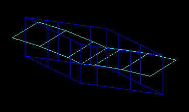
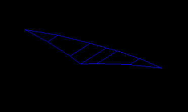

關於這個主題：AutoCAD 2010 彩現III

這算是我第一次嘗試建構大型的3D量體，這在電腦配備上算是一大考驗
我的電腦配備應該算是中等等級(應該吧...)，所以想了一些方法來補救
因為不是每個人的電腦配備都是頂級的，以下提供我的方法和各位分享
現在了解跑3D模型真的很辛苦，尤其是在算圖的時候要花很多時間
希望有經驗的朋友也可一起參與討論，分享一下寶貴的經驗，看看怎麼做可以提升效率!!
1.原則上這個模型若是使用 擬真或概念 的視覺型式，在使用約束環轉時已經跑不動啦(應該是顯卡等級不足吧)，所以先使用2D線架構來轉視圖，找到適合的視景就使用 VIEW 把它記住，系統會以建立相機來設定。

2.這樣可以方便日後的 RENDER圖

3.建模時跟畫2D圖一樣，必須考量到以後的修圖，若一開始就完全將物件建立再同一張圖，那以後改圖時由於量體複雜度高，電腦的運算會很吃力，所以可把圖拆開來建模以及貼材質(RENDER圖)。

4.然後搭配使用 外部參考的方式

5.修模型時只需要到外部參考母圖來作業
a.先在側視圖畫出這樣的斷面
b.模擬薄膜斷面(擠出厚度不用太大)

c.再來建立薄膜上視圖，然後把他們疊在一起

d.使用交集後即可完成

6.改好模型要算圖時可以再到子圖(組合好的3D模型)即可